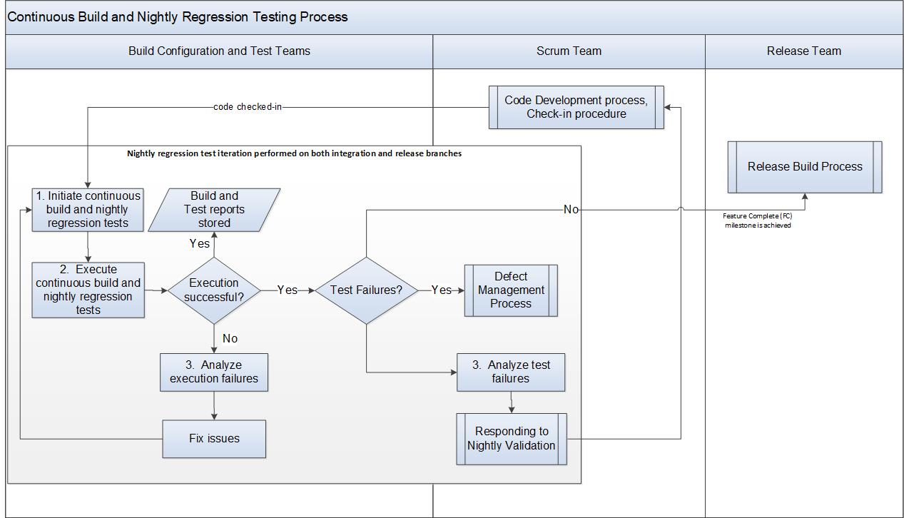

Continuous Build and Nightly Regression Testing Process¶
A series of tests and configuration builds are run on nightly basis to identify any regression issues from daily check-ins. The activities mentioned below are automated/scheduled tasks executed by the Build system (e.g., Jenkins).
The Architect/Domain Leads are responsible to identify the configurations and test matrices for the nightly regression and the test team is responsible for nightly regression test runs.
Entry Criteria |
|
Inputs |
|
Exit Criteria |
|
Outputs |
|
Activities¶

Step # |
Activity Name |
Description |
|---|---|---|
1 |
Initiate the continuous build and nightly regression tests |
Continuous build and nightly regression tests are scheduled on a nightly basis via the Build system on the integration and release branches. |
2 |
Execute Build and Tests |
The continuouse build and nightly regression test iterations are performed until the Feature Complete (FC) milestone is achieved. After the Feature Complete milestone is achieved, the Release Build process is initiated.
Note: In parallel, the Feature/Epic verification (Testing) Process is performed. |
3 |
Analyze execution and test failures |
For failures, the engineering team determine if the failures are due to simple infrastructure issues (e.g. disk full, configuration typo) or product defect. The engineering team responds according to the Responding to Nightly Validation Procedure For infrastructure issues, take steps to address the issue directly. |
Change Log¶
Date |
Change Request ID |
Version |
Change By |
Description |
05/01/2020 |
N/A |
0.1 |
Shree Vidya Jayaraman |
Initial Draft |
06/26/2020 |
N/A |
0.2 |
Shree Vidya Jayaraman |
Updates based on Kitty’s feedback |
07/22/2020 |
N/A |
0.3 |
Shree Vidya Jayaraman |
Updates based on Kitty’s feedback (remove nightly regression test details) |
07/24/2020 |
N/A |
0.4 |
Shree Vidya Jayaraman |
Updates based on Kitty’s feedback |